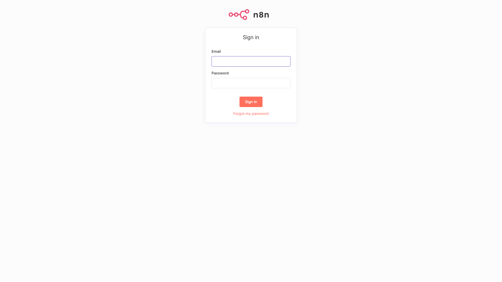

The workflow begins in n8n, which manages the execution timing and environment variables. It ensures every test is run within a consistent context.
Playwright takes over, launching a headless browser to perform complex human-like interactions: Secure Multi-factor Login, Sidebar Navigation, and Data Entry.
The system goes beyond DOM checking. It intercepts PDF generation, downloads the raw data, and uses Node.js to parse text for 100% content accuracy.
On completion, n8n formats the terminal output. If failure occurs, a high-res screenshot is attached. The final report is pushed to Slack API for instant team visibility.
